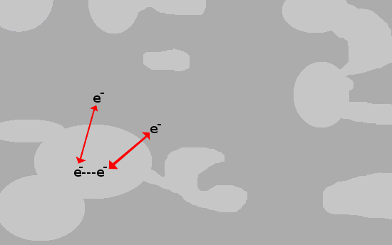

Research interests, accomplishments and motivations
Interview for a post-doctral position in the
Division of Observational Relativity and Cosmology
at the
Max-Planck Institute for Gravitational Physics
(Albert Einstein Institute)
April 22th, 2015
Andrés García Saravia Ortiz de Montellano
Scientific interests
Quantum mechanics
Quantum computing and quantum information
Intimate relationship between physics and information
Landauer's principle: erasing data always disipates energy
Quantum computing
Some algorithms are much faster than their clasical counterparts
Quantum cryptography
New insights on physics concepts
Black hole information paradox
Many-body physics from a quantum information perspective
Quantum teleportation
We presented a poster during the XVII International Materials Research Congress (Cancún, México 2008) exploring graphene's transport properties as a candidate for realizing qubits
I decided not to continue collaborating in this group.
Superconductivity
- Great for making qubits.
- Very complex and unsolved problem.
- Many practical applications.
Low temperature (T$_c$) superconductivity is explained by an attractive e--e- force mediated by phonons (collective lattice excitation).
It seemed that the lattice in high temperature superconductors was not important (superconducivity as a purely electronic phenomenon)
Purely electronic theories are unable to produce e--e- attraction
X-ray absorption fine structure (XAFS)
Fe-based superconductors ReOFeAs
For a low-temperature superconductor
$T_c\propto e^{-1/N_0}$ ($N_0$: density of state at the Fermi level)
Does this hold true for Fe-based superconductors?
X-Ray absorption
XANES analysis gives information about the local electronic structure
Mostly monotonic change (except La)
Not correlated with $T_c$
Is this behaviour due to chemical pressure or
is it related to the $f$ orbitals in the Re?
Journal of Applied Physics Vol. 111, p. 112631. (2012)
Rare-earth's electrons are important
Polaronic effects
Cu-based superconductors
In low $T_c$ superconductors the e--e- attraction is mediated by phonons
Could polarons mediate it in high $T_c$ supercondutors?


The O(4)-Cu(1)-O(4) cluster can be analized separately
X-ray absorption (XAFS) shows two bond distances
Thera are anomalies in the infrared spectra
Usually, charge and lattice degrees of freedom are treated separately
In this O-Cu-O cluster a hamiltonian including a charge-lattice coupling reproduces XAFS and infrared anomalies
In the physically relevant parameter range there is also polaron formation
Does polaron formation affect the other electronic excitations?
The proposed hamiltonian is
$H = H_{el} + H_{ph} + H_{el-ph}$
Where:
$ H_{el} = \sum_{\sigma,i=1}^3 E_i n_{\sigma i} + U\sum_{i=1}^3 n_{i\downarrow}n_{i\uparrow} + t\sum_{\sigma} \left(c_{1\sigma}^\dagger c_{2\sigma} + c_{2\sigma}^\dagger c_{3\sigma} + H.c. \right)$
$ H_{ph} = \hbar \omega_{ir}\left(b_{ir}^\dagger b_{ir}+\frac{1}{2}\right) + \hbar \omega_R \left( b_R^\dagger b_R + \frac{1}{2}\right)$
$H_{el-ph} = \tilde{\lambda_{ir}}u_{ir}(n_3 - n_1) + \tilde{\lambda_R} u_R (n_1 + n_3-s_0)$
This is an infinite-dimensional matrix (infinite number of phonones).
However, ew can find the lowest excitations considering only a few phonons.
We build the hamiltonian matrix and find its eigenvalues along with other useful quantities
Dynamic distortion in a narrow parameter range

Comparison with experiment allows the determination of the charge-lattice coupling parameter $\lambda_{ir}$
At the relevant $\lambda_{ir}$ coupling value the electronic and phononic excitations have an unusual behaviour.
With this value we reproduce the infrared and XAFS anomalies.
We observe several features of the electronic excitations.
Journal of Superconductivity and Novel Magnetism, 27(4), 991–994. (2013)
And we predict that substutiting 16O with 18O on the lattice will impact the electronic excitations on the system
Journal of Superconductivity and Novel Magnetism, (1), 6–10. (2014)
We have shown there are polaronic objects in Cu-based superconductors.
Polaron formation impacts all excitations in a subtle but important way.
Multiple component superconductivity
Future work
Additional term coupling free fermions (charge carriers) to the polaronic objects
$H=H_{el}+H_{ph}+H_{el-ph}+H_A$
$H_A = E_A \sum_{\sigma, k=1,2} m_{\sigma, k} + t_A \sum_{\sigma} (a_{\sigma, 1}^\dagger a_{\sigma, 2} + a_{\sigma,2}^\dagger a_{\sigma, 1}) + \lambda_A \sum_{i,k,\sigma} \left( c_{i,\sigma}^\dagger a_{k,\sigma} + a_{k,\sigma}^\dagger c_{i,\sigma} \right)$
Computing / Software development
General programming
I have programmed in:
- C / C++
- R
- Octave / Matlab
- Mathematica
- Python
- Common Lisp
Web development
I was driven by my interest in organize and communicate research
In the future I might use Google Compute Engine from this platform.
Data analysis and Big data
In progress:
- Parallel computing
- GPU programming
- Hadoop and MapReduce for big data
Electronics
Hobbyist with microcontrollers and embedded Linux
Astronomy / Astrophysics
One attempt
Tried to make my bachelor's thesis in astrophysics (cepheids) but my advisor left
Amateur astronomer
Keeping an eye open
- Possible Resonance Effect of Axionic Dark Matter in Josephson Junction (doi:PhysRevLett.111.231801)
- EXAFS and XANES: New Astrophysical Tools to Study the Solid State Structure of Interstellar Grains (doi:10.1086/309571)
- ISMabs: a comprehensive X-ray absorption model for the interstellar medium (doi:1412.3813)
Scientific outreach
General Relativity
Introductory course
G. F. Torres del Castillo
Continuing by myself

Where to go from here?

Thank you for your attention.
ags3006@gmail.com